メモ：環境構築を体験
仮想マシンでLinuxを使ってアプリケーションサーバーにUPしたアプリを実行させたい
目標：VirtualboxでCentOSを使ってTomcatをインストールして自作アプリを実行する
目次:
１・Virtualboxのインストール
Oracle VirtualBox
公式サイトからダウンロードしてガイドに沿ってインストールするだけなので、難しいことは特に無し。
細かいやり方はネットで検索すると大量にでてくるのでそれらを参考にする。
今回はバージョン 6.1.16 を入手
参考になったサイト
いまさら聞けない！Virtualboxとは何か？基礎の基礎を解説！
OracleVM VirtualBoxのインストール手順＜Windows向け＞
２・CentOSのインストール
CentOS 公式サイト
上記から
CentOS-7-x86_64-Minimal-2009.iso をダウンロード
Virtualboxに新規で仮想マシンを作成し、
- 設定→ネットワーク
- アダプター１→ブリッジアダプター
- アダプター２→ホストオンリーアダプター
設定→ストレージ→コントローラー：IDEにダウンロードしたisoファイルをセット
起動するとインストールが始まる
インストールが終わったらisoファイルを除去しておかないと、起動のたびにインストールし直すことになってしまう
参考になったサイト
VirtualBoxにCentOSをインストール
VirtualBoxにCentOS7用の仮想マシンを作成
VirtualBoxのブリッジアダプターを使ってみる。
わわわIT用語辞典 > セントオーエス (CentOS)
わわわIT用語辞典 > Linuxディストリビューション
わわわIT用語辞典 > isoファイル
わわわIT用語辞典 > NAT
３・JDK8のインストール
Tomcatはjavaで作られているので、JDKのインストールが必要
- ダウンロード方法の選択肢
- ①・ホストのWindowsにダウンロードしたファイルを転送
- ②・CentOSからネットに接続して直にダウンロード
今回は②でトライ
3.1 ネットーワークを利用できるかを確認
ping google.com
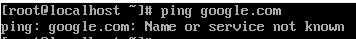
反応が返ってこない
ip addr show
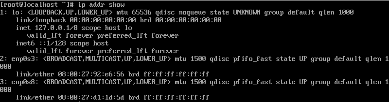
繋がっていない、ようだ
参考になったサイト
Apache Tomcat 9 を CentOS 7 にインストールする手順
【 ip 】コマンド（基礎編）
CentOS7において「ip addr show」の結果をちょっと理解できるように調べた記録
ローカル・ループバック・アドレス（127.0.0.1）とは？
3.2 ネットーワークを接続
別の確認方法 nmcli d
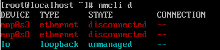
ensp0s3を接続 nmcli connection up enp0s3
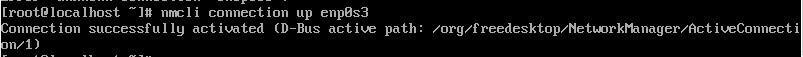
繋がった！、かな？
確認 nmcli d
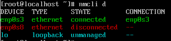
繋がった！
※これだけだと、再起動のたびに再接続が必要
起動時に自動接続にする設定
nmcli con mod enp0s3 connection.autoconnect "yes"
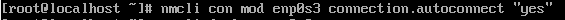
再起動しても繋がっていることを確認できた
ping google.com -c 3 （-c オプションで３回と指定）
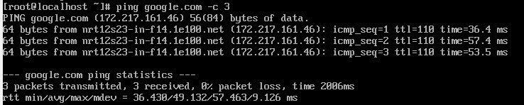
反応する！
グーグルサイトに繋いでみる curl google.com

あれ？ エラーなしリターンなしで永久ループ？ Ctrl + c で離脱
curl -4 google.com にすると
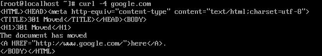
取得できた
参考になったサイト
【VirtualBox】CentOS8をインスト―ルしてネットワーク接続するまで
curlなどのレスポンスが遅いとき(ipv6のDNSに接続できず)
CENTOS 7 ネットワーク最低限初期設定
3.3 JDK8のインストール
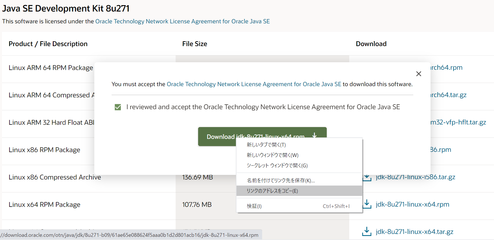
3.3.2 CentOSへダウンロード（絶対パスだからコード長い(泣)）
curl でrpmファイルをダウンロード
curl -OL --header "Cookie: gpw_e24=http%3A%2F%2Fwww.oracle.com%2F; oraclelicense=accept-securebackup-cookie" https://www.oracle.com/webapps/redirect/signon?nexturl=https://download.oracle.com/otn/java/jdk/8u271-b09/61ae65e088624f5aaa0b1d2d801acb16/jdk-8u271-linux-x64.rpm
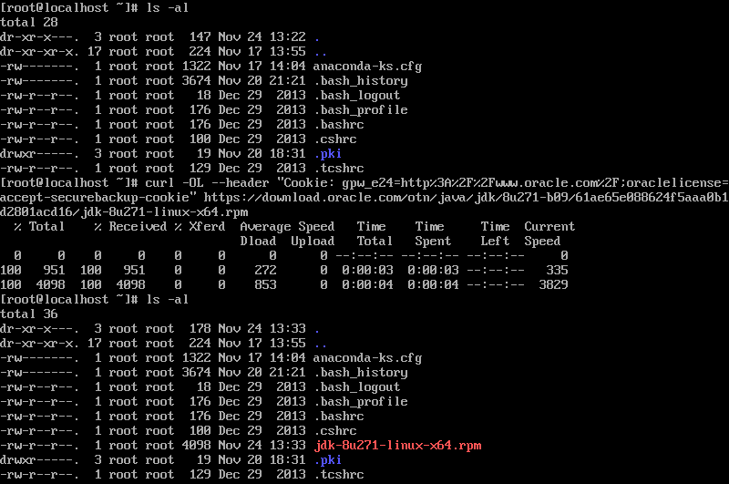
アーカイブファイルが作成されている
CentOSへのインストール
rpm -ivh FileName
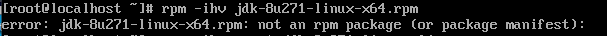
あれ!? エラーだ
yum install FileName
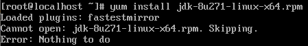
こっちでもダメだ
公式ページのファイルサイズ
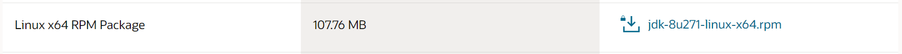
Windowsでダウンロードしたファイルのサイズ
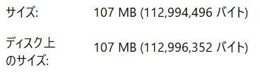
CentOSにダウンロードしたファイルのサイズ
" 4098 "(B? KB?)では小さすぎる
ちゃんとダウンロードできていなかったようだ
他のファイルもダウンロード
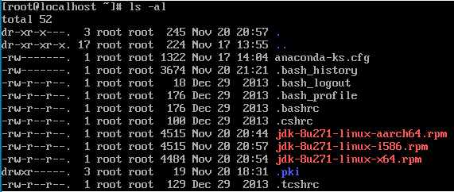
三つとも完全にはダウンロードできていないよう
rm FileName
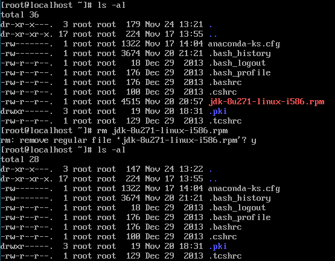
何回かファイルを削除してやり直してもダメ
う～む、何が原因かは不明だが、CentOSにダイレクトにダウンロードは一旦諦めて、
Windowsにダウンロードしたファイルを転送して渡す方法をトライしてみよう
参考になったサイト
wget/curlでOracleJDKをダウンロード
Ubuntu18.04にJavaを導入する方法（JREやJDKの違いについても解説）
４・TeraTermを使ってみる
”定番のターミナルエミュレーター”なのだそうで、転送させる方法を調べているとこのソフトをよく見かける
4.1 インストールからCentOSへの接続まで
Tera Term (テラターム) プロジェクト日本語トップページ
上記サイトから最新版のteraterm-4.105.exe (日付: 2019-12-07) をダウンロード
インストールも全て変更しないで終了
※Program Filesの変更権限がない場合、保存場所を権限のある範囲の場所に指定しないとインストールできない
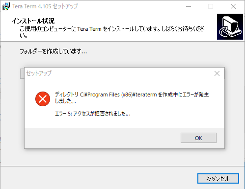
- CentOSのネット接続設定を変更する
- Virtualboxのネットワークの割り当てを
NAT にして、 高度 の ポートフォワーディング をクリック
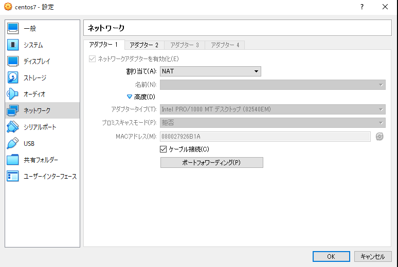
- 右上のプラスボタンで新しいルールを作成する
名前はなんでも良く、プロトコルはそのまま、ホストポートも空いていれば自由
ゲストポートは 22 を使用
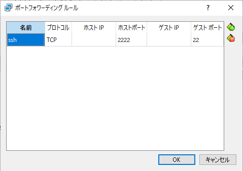
- 一応、再起動する
ゲスト側（CentOS）がネットへ接続されているか確認（毎回設定を忘れてて、時間をムダにした人がいます…）
nmcli d
TeraTermを起動
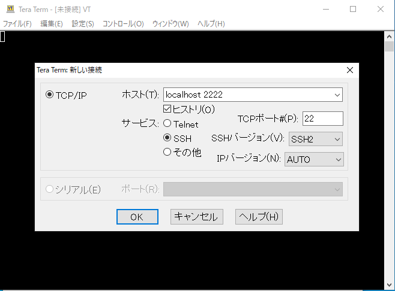
上記のように入力して OK を押す
セキュリティ警告はでるが 続行 を押す
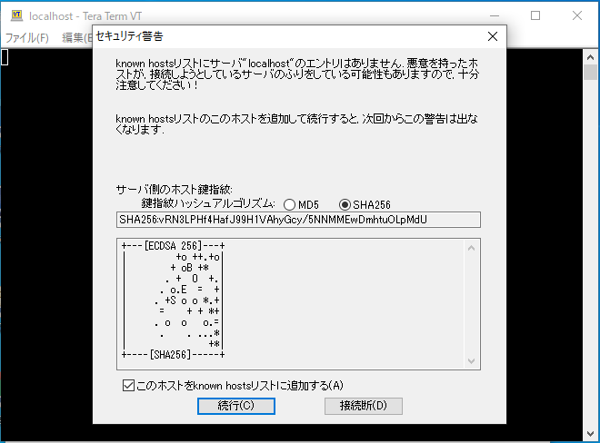
毎回でるが、書いてある設定で消せる
ログイン画面に入れれば成功！
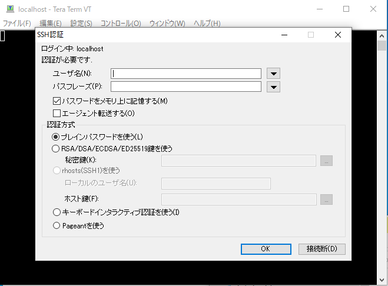
CentOSにログインするのと同じユーザーパスワードでログインする
WindowsのTeraTermからVirtualboxのCentOSに接続できた！
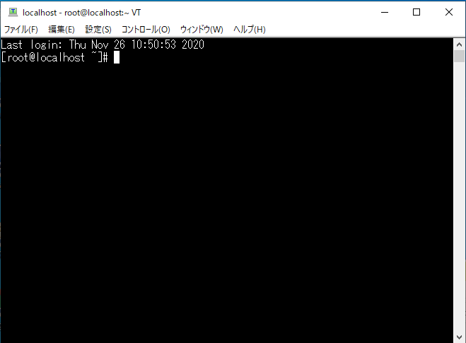
4.2 WindowsにダウンロードしたJDK8を転送してインストールさせる
Windows上のファイルをTeraTermのウィンドウにドラッグするとこの画面になる
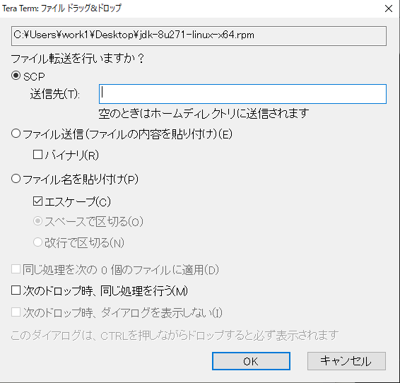
ホームディレクトリに送りたいのでこのまま OK を押す
送信が始まった！
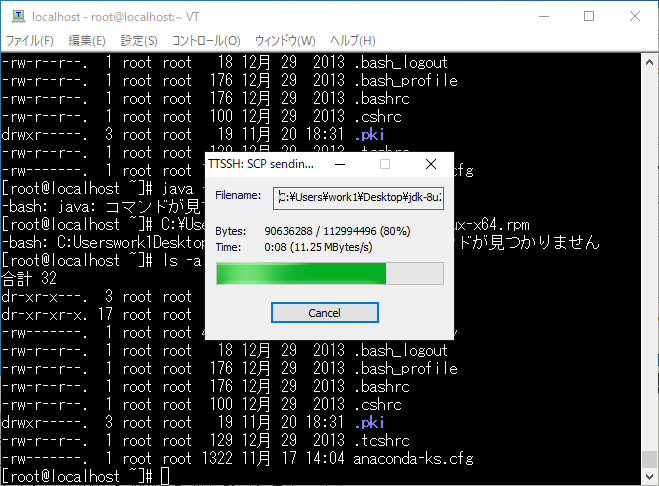
ちゃんと追加されている！
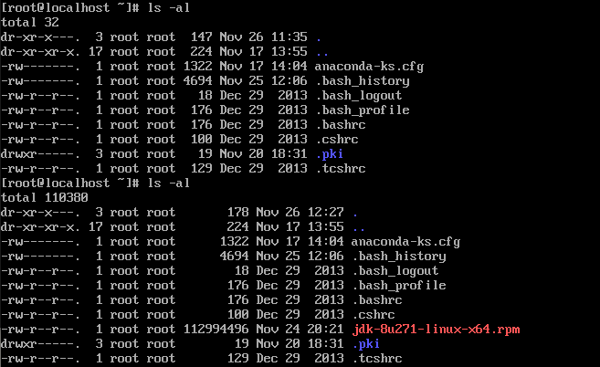
java がまだインストールされていないことを確認
java -version
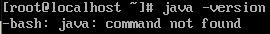
rpmでインストール
rpm -ihv FileName
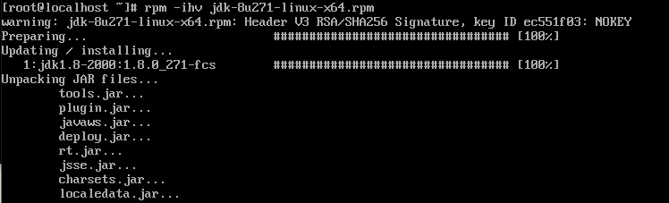
いいぞ！
インストールされていることを確認
java -version
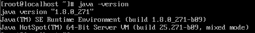
できてる！
day.javaファイルを用意して実行してみる
import java.util.Calendar;
class day {
public static void main(String[] args) {
Calendar cal = Calendar.getInstance();
int year = cal.get(Calendar.YEAR);
int month = cal.get(Calendar.MONTH) + 1;
System.out.println(year + " 年 " + month + " 月");
}
}

無事に実行できた！
参考になったサイト
わわわIT用語辞典 > Tera Term
CentOS7にJava OpenJDK8のインストール
５・Tomcat8のインストール
セキュリティ上の理由で、Tomcatは非特権ユーザー（root以外）で実行しなくてはいけないらしい
なのでtomcatグループのtomcatユーザーを新規作成する
5.1 ユーザーの新規作成
グループの追加 groupadd tomcat
グループの一覧表示 getent group
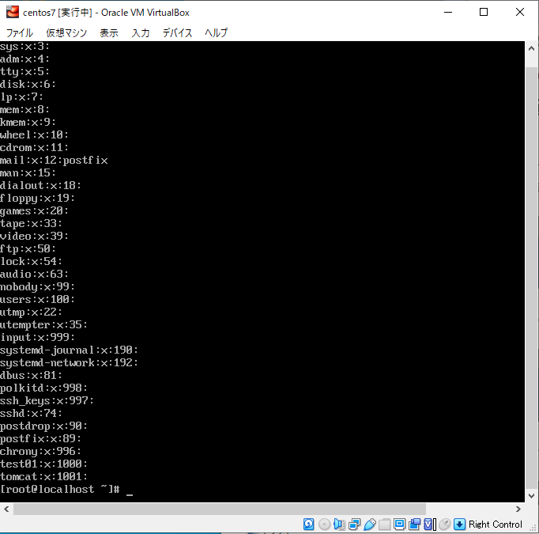
最後に追加されている
- 新しいユーザーの追加
useradd -M -s /bin/nologin -g tomcat -d /opt/tomcat tomcat
-M = このユーザー用の新しいホームディレクトリは作らない-s = 〃 のログインシェル（だれもこのアカウントにログインできない）-g = 〃 のプライマリーグループの名前 or ID-d = 〃 のホームディレクトリを指定
- ユーザー一覧の表示
cut -d: -f1 /etc/passwd
-d = デリミタ【 delimiter 】で区切る（この場合「,」）-f1 = 1つ目のfieldのみを指定
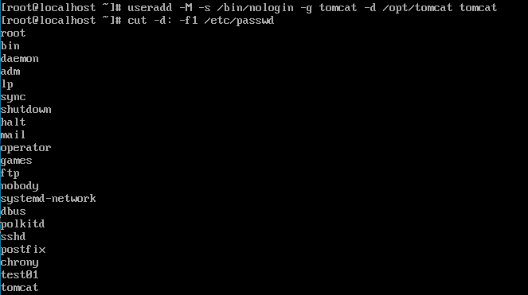
最後に追加されている
5.2 Tomcatのダウンロード
Tomcatのダウンロードサイト
上記から 8.5.60 Core tar.gz (pgp, sha512) をWindowsへダウンロード
TeraTermでVirtualboxのCentOSへ転送する
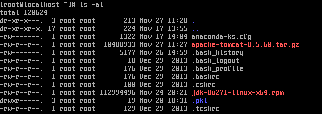
5.3 Tomcatのインストール
Tomcatを展開する場所を作成
mkdir /opt/tomcat
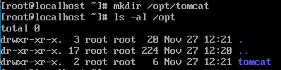
root と並列の opt 内に作成された
作成したディレクトリにTomcatを展開
tar xvf apache-tomcat-8.5.60.tar.gz -C /opt/tomcat --strip-components=1
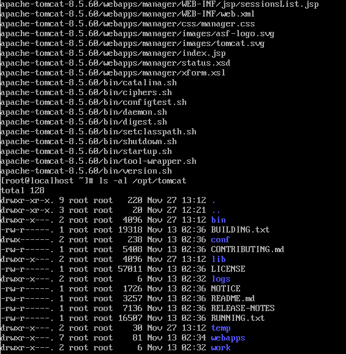
opt/tomcat 内に展開された
5.4 権限を更新
新規作成したtomcatユーザーには、Tomcatインストールへの適切なアクセス権が必要なので設定する
Tomcatインストールパスへ移動
cd /opt/tomcat
tomcatグループに、インストールディレクトリ全体の所有権を付与
chgrp -R tomcat /opt/tomcat
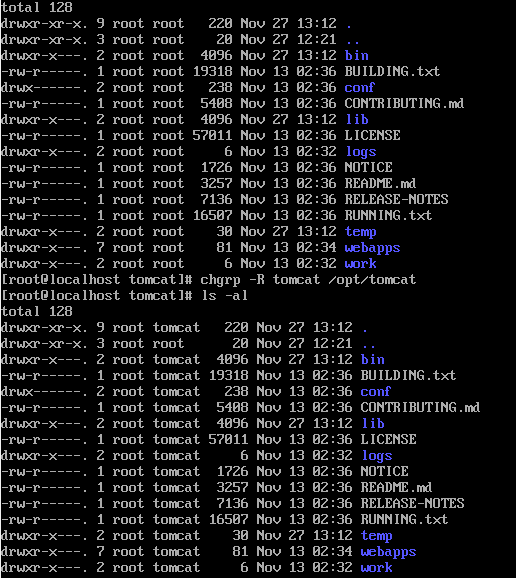
所有権の変更が確認できる
tomcatグループに、confディレクトリとその全てのコンテンツへの読み取りアクセス権を付与し、ディレクトリ自体へのアクセスを実行
chmod -R g+r conf; chmod g+x conf
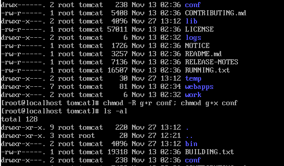
confディレクトリへの読み取り実行権限が変更された
tomcatユーザーを、webapps work temp logs ディレクトリの所有者にする
chown -R tomcat webapps/ work/ temp/ logs/
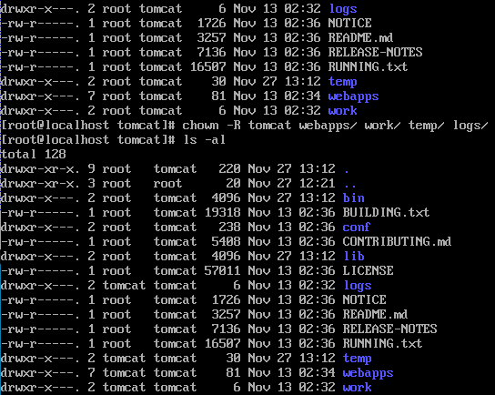
各ディレクトリの所有者が変更された
5.5 Systemd Unitファイルのインストール
Tomcatをサービスとして実行できるようにするため、Tomcat Systemdユニットファイルを設定
次のコマンドを実行して、ユニットファイルを作成してテキストエディタを開く
vi /etc/systemd/system/tomcat.service
下記のスクリプトを記入し、
ESCキー →
:wq →
Enterキー で保存する
(保存しないで閉じる場合は、
ESCキー →
:q! →
Enterキー ）
このスクリプトは、設定を指定して、tomcatユーザーとしてTomcatサービスを実行するようサーバーに指示する、らしい（汗）
# Systemd unit file for tomcat
[Unit]
Description=Apache Tomcat Web Application Container
After=syslog.target network.target
[Service]
Type=forking
Environment=JAVA_HOME=/usr/lib/jvm/jre
Environment=CATALINA_PID=/opt/tomcat/temp/tomcat.pid
Environment=CATALINA_HOME=/opt/tomcat
Environment=CATALINA_BASE=/opt/tomcat
Environment='CATALINA_OPTS=-Xms -Xmx -server -XX:+UseParallelGC'
Environment='JAVA_OPTS=-Djava.awt.headless=true -Djava.security.egd=file:/dev/./urandom'
ExecStart=/opt/tomcat/bin/startup.sh
ExecStop=/bin/kill -15 $MAINPID
User=tomcat
Group=tomcat
UMask=0007
RestartSec=10
Restart=always
[Install]
WantedBy=multi-user.target
今回はTeraTermでコピペさせて貰った 便利！
ls -al /etc/systemd/system
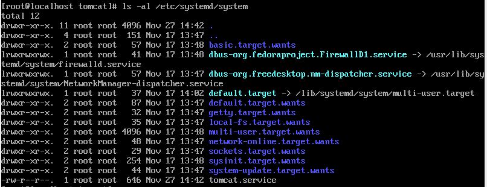
tomcat.serviceファイルが作成された
Systemdをリロードして、Tomcatユニットファイルをロードする
systemctl daemon-reload
これで、このsystemctlコマンドを使用してTomcatサービスを開始できる
systemctl start tomcat
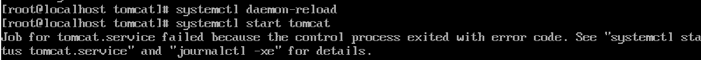
ん？ failed？
ファイアウォール設定で、8080ポートを開放してみる
vi /etc/sysconfig/iptables で
-A INPUT -m state --state NEW -m tcp -p tcp --dport 8080 -j ACCEPT
と追加したら start ではエラーは出なくなったが、
systemctl status tomcat
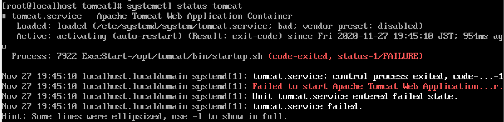
やっぱりfailed...
サービスは有効になっているようだ
systemctl list-unit-files tomcat.service
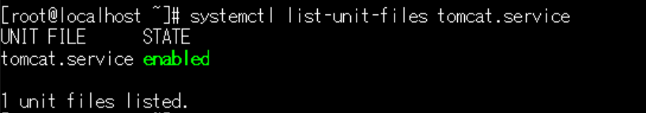
journalctl -xe でログを読んで、
意味がわからないが赤字の部分を調べてみよう
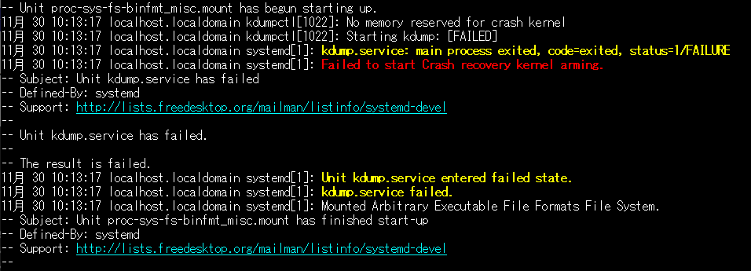
systemctl status kdump.service を見ると、これもfiled
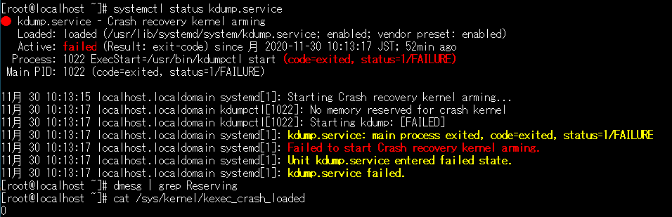
dmesg | grep Reserving ダンプキャプチャカーネル用に確保されたメモリ量の確認は反応すらしない
cat /sys/kernel/kexec_crash_loaded の出力が１じゃないのは、ダンプキャプチャカーネルが読み込まれていないということらしい
これが立ち上がらないからダメなの？（保留）
5.6 Tomcat Web管理インターフェースを構成する
未実施
5.7 Webインターフェイスにアクセスする
未実施
参考になったサイト
CentOS 7にApache Tomcat 8をインストールする方法
Apache Tomcat 8 を CentOS 7 にインストールする手順
CentOS7でtomcat8構築
わわわIT用語辞典 > ログインシェル (login shell)
CentOSにTomcatをインストールする
わわわIT用語辞典 > デーモン (daemon)
CentOS 7にTomcatをインストールして起動したらエラーになる時の対処方法
備忘録 CentOS7, Tomcat8.5.11をsystemctlコマンドで起動/停止したい
systemctlステータスにベンダープリセットが表示されます：無効
[Tomcat] 正常に起動しているか確認する
CentOS7(Virtualbox) ホストＯＳのブラウザで ゲストＯＳ上のサイトを開く
カーネルクラッシュダンプ (Kdump) の概要と設定方法
６・Tomcat8のインストール（２回目）
6.1 yum でインストール
Tomcatがインストールされているか確認
yum list installed | grep tomcat
結果が何も返ってこないので、インストールされていない
yum -y install tomcat
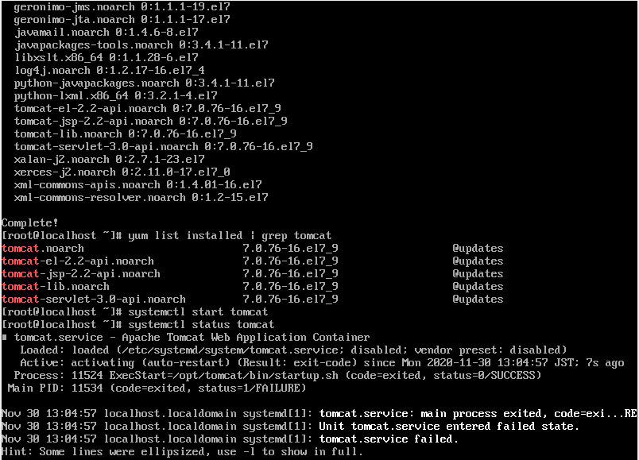
「Complete!」と表示され、
yum list installed | grep tomcat も反応がある
しかし、failedは健在
6.2 設定ファイルの記入内容をいじってみる
いくつかのサイトの記述を見比べてみる
[Unit]
Description=Apache Tomcat 9
After=network.target
[Service]
Type=oneshot
ExecStart=/usr/libexec/tomcat9/bin/startup.sh
ExecStop=/usr/libexec/tomcat9/bin/shutdown.sh
RemainAfterExit=yes
User=tomcat
Group=tomcat
[Install]
WantedBy=multi-user.target
[Unit]
Description=Apache Tomcat 8.5.11
After=network.target remote-fs.target nss-lookup.target
[Service]
User=tomcat
Group=tomcat
Type=oneshot
ExecStart=/usr/local/apache-tomcat-8.5.11/bin/startup.sh
ExecStop=/usr/local/apache-tomcat-8.5.11/bin/shutdown.sh
RemainAfterExit=yes
[Install]
WantedBy=multi-user.target
[Unit]
Description=Apache Tomcat 8
After=network.target
[Service]
User=tomcat
Group=tomcat
Type=oneshot
PIDFile=/opt/apache-tomcat-8.0.50/tomcat.pid
RemainAfterExit=yes
ExecStart=/opt/apache-tomcat-8.0.50/bin/startup.sh
ExecStop=/opt/apache-tomcat-8.0.50/bin/shutdown.sh
ExecReStart=/opt/apache-tomcat-8.0.50/bin/shutdown.sh;/opt/apache-tomcat-8.0.50/bin/startup.sh
[Install]
WantedBy=multi-user.target
参考にして、下記にしてみる
vi /etc/systemd/system/tomcat.service
[Unit]
Description=Apache Tomcat 8
After=network.target
[Service]
User=tomcat
Group=tomcat
Type=oneshot
ExecStart=/opt/tomcat/bin/startup.sh
ExecStop=/opt/tomcat/bin/shutdown.sh
RemainAfterExit=yes
[Install]
WantedBy=multi-user.target
ExecStart/ExecStopの、実際にファイルが存在するパスを指定
systemctl daemon-reload して、
systemctl start tomcat
systemctl status tomcat
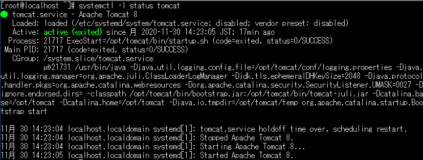
failedが無い！
が、ブラウザで接続できない...
6.3 ポートフォワーディングのルール追加
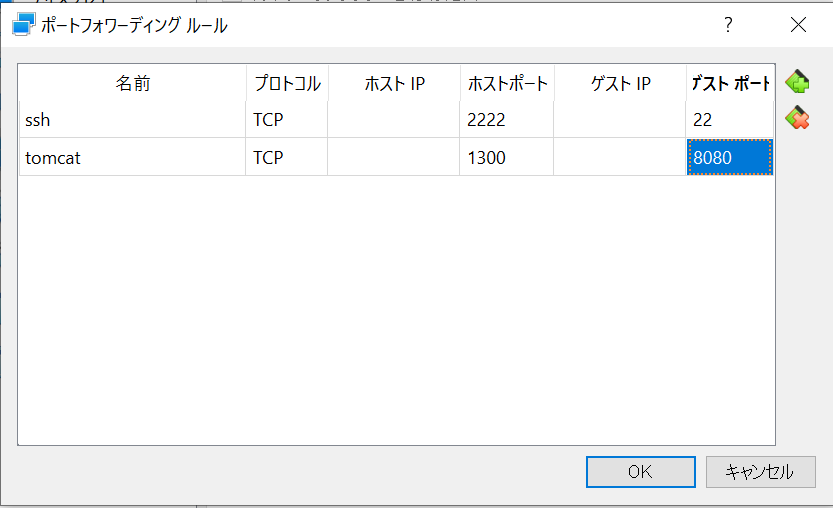
ホストポート 1300(なんでも良い)
ゲストポート 8080
を設定
CentOSのファイアウォールを無効化
systemctl stop firewalld
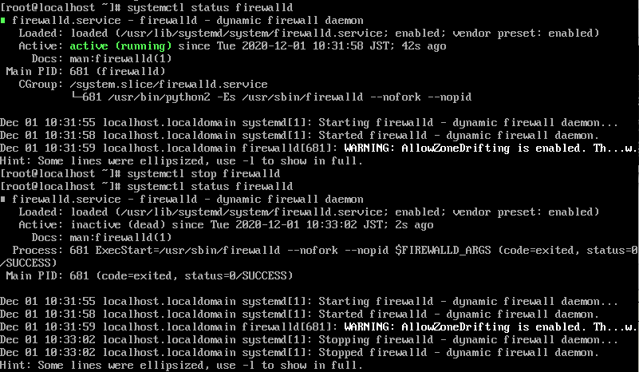
ファイアウォールが inactive になった
ホストのブラウザからゲストのTomcatへアクセス
http://localhost:1300(新しく設定したホストポートの番号)
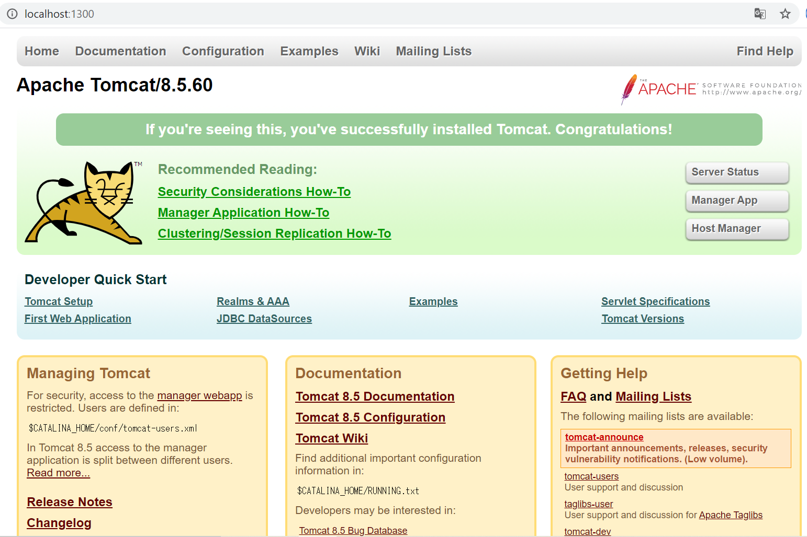
やった、表示された！！
Congratulations! って(泣)
参考になったサイト
VirtualBoxのcentosにTomcatをインストールしてサンプルアプリを動かしてみた
【Linux】Linux（CentOS7）@VirtualBoxにTomcat9をインストールする
VirtualBoxにTomcatをインストールした後ブラウザでサンプルページが表示できない事象
７・Tomcatでアプリケーションを実行する
7.1 サンプルアプリの実行
サンプルページ用のファイルを追加
yum -y install tomcat-webapps
「Complete!」
中を覗く ls -al /opt/tomcat
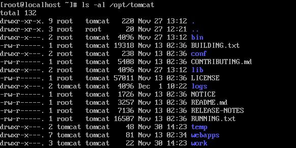
ls -al /opt/tomcat/webapps
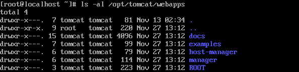
ls -al /opt/tomcat/webapps/examples
index.htmlを実行してみる
http://localhost:1300/examples/index.html
7.2 自作アプリを実行
clock.zipを転送
zipファイルを解凍するには unzip コマンドを使うようだが、
yum list installed | grep unzip で確認したところ、無い
unzipコマンドがインストールできるかを確認
yum --enablerepo=epel,remi,rpmforge info unzip
ある、ってことらしい
unzipコマンドをインストール
yum install unzip
確認してくるので、もちろん y → ENTER
サクサクっと完了
clock.zipを解凍 -dオプションで解凍先を指定
(webアプリは webapps に配置するものらしい)
unzip clock.zip -d /opt/tomcat/webapps
確認
ls -al /opt/tomcat/webapps
ls -al /opt/tomcat/webapps/clock
index.htmlを実行してみる
http://localhost:1300/clock/index.html
自作のアプリも実行できた！
参考になったサイト
TomcatにWebアプリケーションを配備する
CentOS7にzipが入っていなかった件
８・まとめ
たかがここまでで四苦八苦…
基本的にはインストールしてダウンロードをするだけだが、
linuxコマンドの使い方や、ネット接続の方法などの細かい設定が勉強になった。